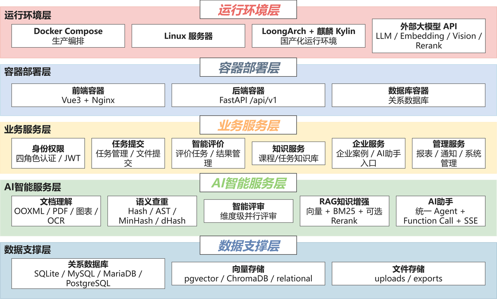

系统面向软件实训教学场景，覆盖「教师布置任务 → 学生提交成果 → AI 维度级评审 → 教师复核 → 企业协同评价」全流程。前端为 Vue3 单页应用，按学生、教师、企业、管理员 四套角色布局组织页面；后端为 FastAPI 分层服务；数据层支持 SQLite / MySQL / PostgreSQL 多数据库与三级向量存储后端，可按环境平滑切换。

核心创新
- 维度级并行评审：多智能体按评价维度并行打分，自洽性采样、结构化输出与确定性加权聚合，评分轨迹全程留痕。
- 元评审与教师复核：置信度模型加硬触发复核条件，低置信结果自动进入教师复核工作流。
- RAG 知识增强评价：任务知识库与混合检索机制，把评分标准与课程资料注入评审上下文。
- 文件级语义指纹可信评价：多级匹配检测雷同提交，任务版本隔离，疑似雷同转人工复核。
- 三端 AI 助手：统一 Agent 骨架与意图路由，FunctionCalling 工具循环配四层安全防护。
- Agentic 练习计划：从薄弱维度出发，Planner-Executor 循环主动出题、批改并留痕。
- 实时进度与用量监控：SSE 事件总线推送评价进度，LLM 用量按功能与模型聚合治理。
- 国产化适配：开发环境、Docker、龙芯离线部署三套环境共用同一套后端代码。